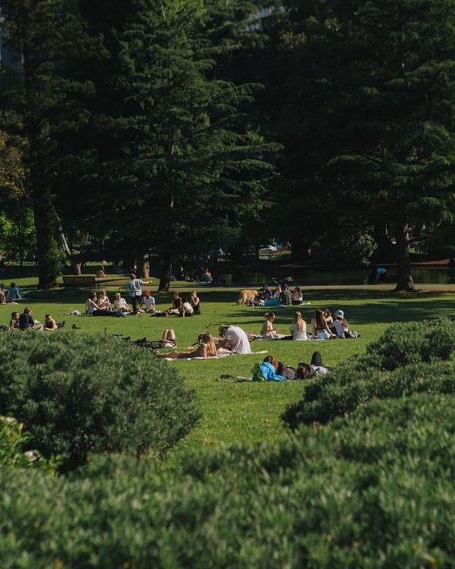
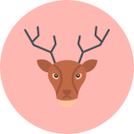
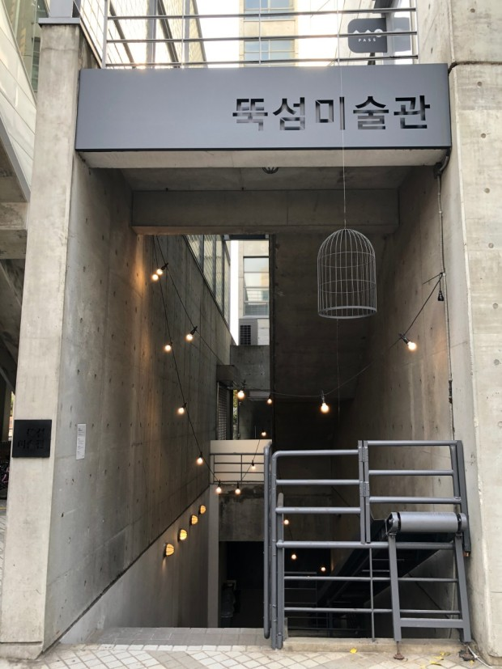
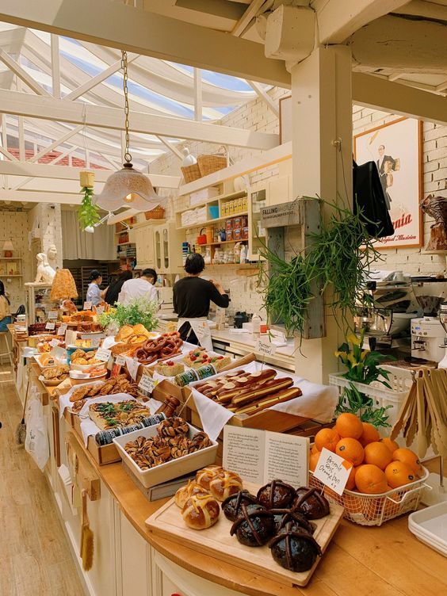
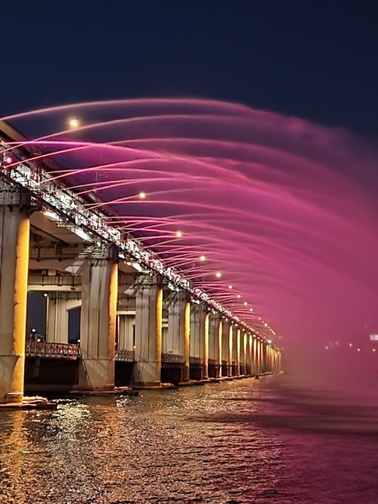

‘함께’
쉬어가는 문화를
만들어 갑니다.
쉬어가는 문화를
만들어 갑니다.
서울숲은
문화예술공원, 체험학습원,
생태숲, 습지생태원
네가지의 특색 있는
공간들로 구성되어 있으며,
한강과 맞닿아 있어 다양한 문화여가 공간을 제공합니다.
또한 서울숲공원은 조성 부터 프로그램 운영까지
시민의 참여로 이루어진 최초의 공원입니다.
공간들로 구성되어 있으며,
한강과 맞닿아 있어 다양한 문화여가 공간을 제공합니다.
또한 서울숲공원은 조성 부터 프로그램 운영까지
시민의 참여로 이루어진 최초의 공원입니다.
서울숲에 오시면 마치 자연의 품으로
돌아간 느낌을 받으실 수 있습니다.
35만 명의 대규모 자연 숲이자 서울을
대표하는 세계적 생태공원으로
포근한 안식처가 되어줍니다.
살아있는 동식물을 직접 체험할 수 있음을 물론
문화와 예술을 동시에 즐길 수 있어 주말 나들이 코스로 인기가 높습니다.
포근한 안식처가 되어줍니다.
살아있는 동식물을 직접 체험할 수 있음을 물론
문화와 예술을 동시에 즐길 수 있어 주말 나들이 코스로 인기가 높습니다.

다양한 이벤트와
새로운 소식을 확인하세요!
새로운 소식을 확인하세요!
휴식을 취해요!
봄날의피크닉
봄날의

함께해요!
즐거운체험활동
즐거운

-
나비정원
서울숲에서는 나비 먹이식물도 직접
생산하고 있답니다! 궁금하지 않으신가요? 나비 정원에 한 번 놀러 오세요!
-
사슴체험
서울숲에는 귀여운 사슴이 있어요!
꽃돌이와 꽃순이한테 간식도 주면서
사슴과 같이 교감을 해보아요!
-
봉사체험
서울숲은 당신과 함께 자랍니다!
다양한 자원봉사 체험도 있으니
함께 깨끗한 서울숲을 만들어가요!
뭐가 있을까?
서울숲
주변 볼거리
서울숲
주변 볼거리

뚝섬 미술관
피로와 스트레스를 푸는 곳!
전시는 잠시나마 쉼과 휴식을 안겨줍니다.
온전히 자신만의 시간을 가져보세요!

성수동
빵지순례의 핫플 필수 코스!!
서울숲과 동일한 성동구에 위치하고 있으며,
피크닉에 어울리는 빵을 골라보세요!

한강
서울의 야경 빛을 한강이 한 번 더 비춰주면서
하루를 마무리 해야하는 시간을
로맨틱하게 한강에서 즐겨보세요!
오시는 길